Part 1
spheres with arguments -s 64 -l 4 -r 480 360 and varying max ray depths:
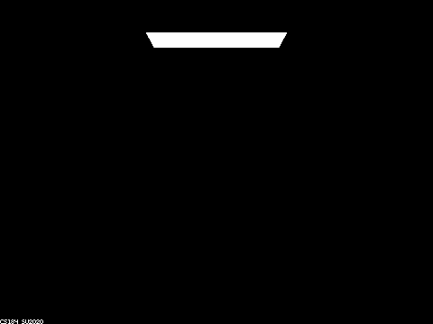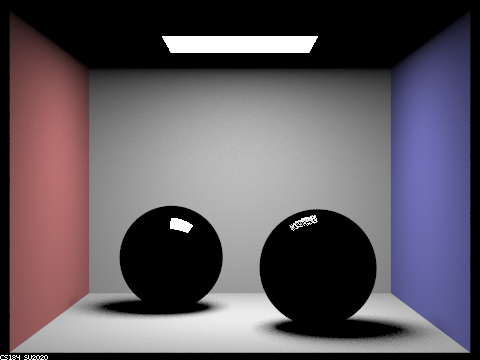
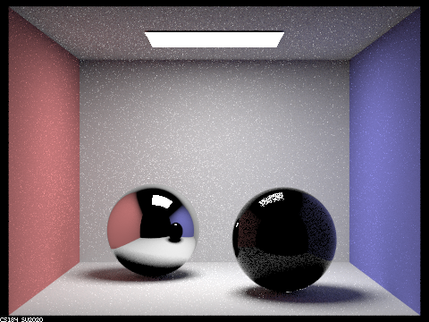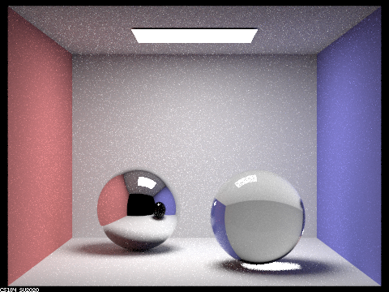
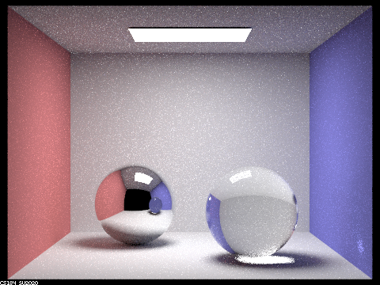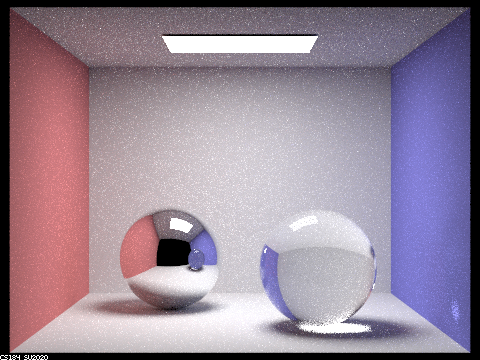
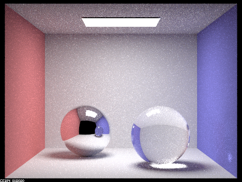
With 0 bounces we only see direct light from the light source. With 1 bounce we can see the walls of the room as well as the light reflecting off the spheres. With 2 bounces, we can see the reflection of the rest of the room on the left sphere. This is because it takes 2 bounces for the light to go from the source to a part of the room, then to the sphere, then to the camera. With 3 bounces, we're able to see light refracting through the right sphere. This is because the light must hit part of the room, then enter the sphere, then exit the sphere. With 4 bounces we can see the right sphere is no longer black in the reflection on the left sphere. This is because it always takes 1 more bounce for the reflection to accurately portray the rest of the room. The 5 bounce image looks relatively similar to 4 bounces. The only difference I can see is that the shadow under the right sphere is a bit softer. Depth 100 looks essentially identical to depth 5.
Part 2
dragons with arguments -s 128 -l 1 -m 5 -r 480 360 and varying alpha: 0.005, 0.05, 0.25, 0.5
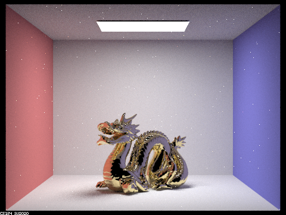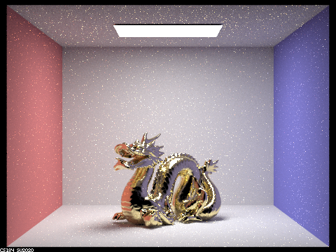
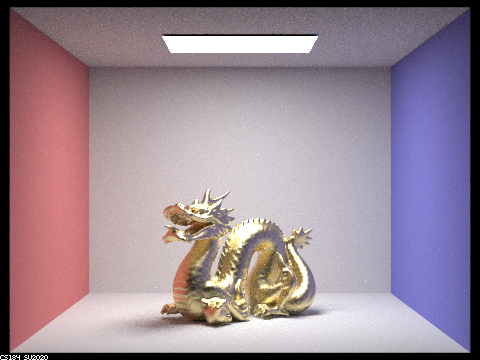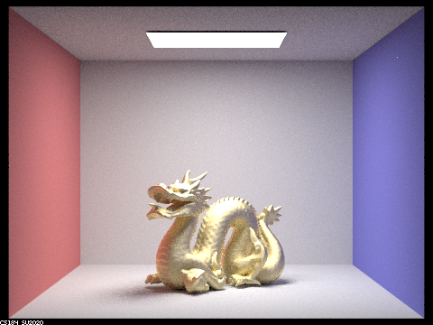
As alpha increases we can see the dragon becomes less and less shiny. This makes sense because lower alpha corresponds to a smoother surface leading to a shinier object. Higher alpha corresponds to a rougher surface and a more diffuse object.
bunnies with arguments -s 64 -l 1 -m 5 -r 480 360: hemisphere sampling, importance sampling
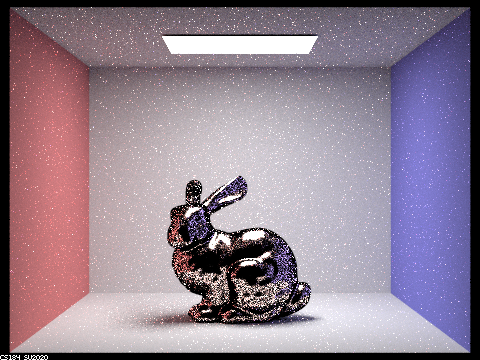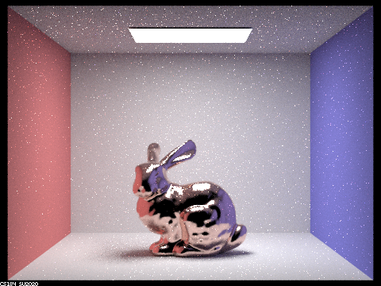
As we can see, importance sampling produces a much less noisy result with the same number of samples. While the hemisphere sampling rabbit has a lot of dark spots on it caused by hemisphere sampling missing the light source, the importance sampling rabbit has relatively few such spots.
bunny made of zinc with arguments -s 64 -l 1 -m 5 -r 480 360
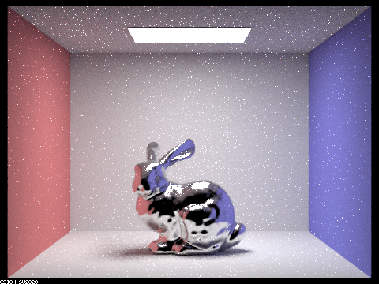
website link: https://cal-cs184-student.github.io/sp22-project-webpages-huangshawn1/